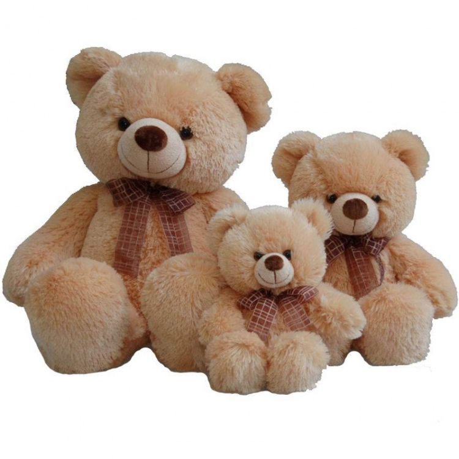

Игру́шка — предмет, предназначенный для взаимодействия с предметом в целях игры и познавания мира. Воссоздавая реальные и воображаемые предметы, образы, игрушка служит целям умственного, нравственного, эстетического и физического воспитания ребёнка, помогая ему познавать окружающий мир, приучая к целенаправленной, осмысленной деятельности и способствуя развитию мышления, памяти, речи, эмоций. Игрушка широко используется в учебно-воспитательной работе с детьми, в частности для развития технического и художественного творчества (см. детские игры, детское творчество). Типы, характер, содержание и оформление игрушки определяются конкретными воспитательными задачами применительно к возрасту детей с учётом их развития и интересов. Как произведения декоративно-прикладного искусства игрушки, особенно национально-традиционные, используются в качестве декоративных элементов в современном интерьере.

Содержание и формы игрушки находятся в непосредственной связи с социальным строем общества, с уровнем его культуры
Самые древние игрушки сделаны из доступных природных материалов, камней, палок и глины. Тысячи лет назад египетские дети играли в куклы, у которых были парики и подвижные конечности, они были сделаны из камня, керамики и дерева[2]. В Древней Греции и Древнем Риме дети играли с куклами, сделанными из воска и терракоты, луком и стрелами, йо-йо. В Греции, когда дети, особенно девочки, достигали совершеннолетия, было принято приносить игрушки детства в жертву богам. Накануне свадьбы девушки возраста около четырнадцат и лет в качестве обряда посвящения во взрослую жизнь приносили свои игрушки в храм
Самые древние игрушки сделаны из доступных природных материалов, камней, палок и глины. Тысячи лет назад египетские дети играли в куклы, у которых были парики и подвижные конечности, они были сделаны из камня, керамики и дерева[2]. В Древней Греции и Древнем Риме дети играли с куклами, сделанными из воска и терракоты, луком и стрелами, йо-йо. В Греции, когда дети, особенно девочки, достигали совершеннолетия, было принято приносить игрушки детства в жертву богам. Накануне свадьбы девушки возраста около четырнадцати лет в качестве обряда посвящения во взрослую жизнь приносили свои игрушки в храм
Игрушки, как и сам процесс игры, выполняют множество различных функций. Они развлекают ребёнка, выполняя одновременно и воспитательную функцию. Кроме того, игрушки улучшают когнитивные функции и способствуют развитию творческих способностей. Они помогают развитию физических и умственных навыков, необходимых ребёнку в дальнейшей жизни.